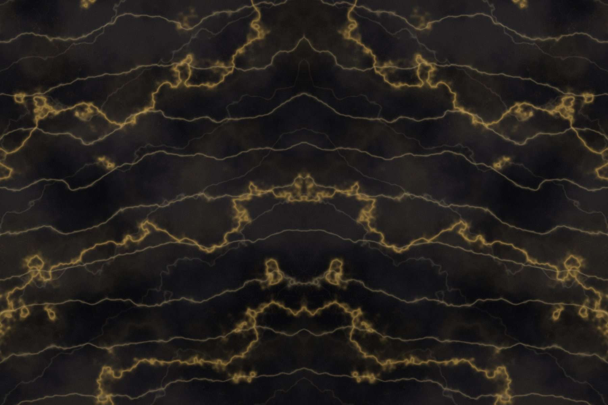
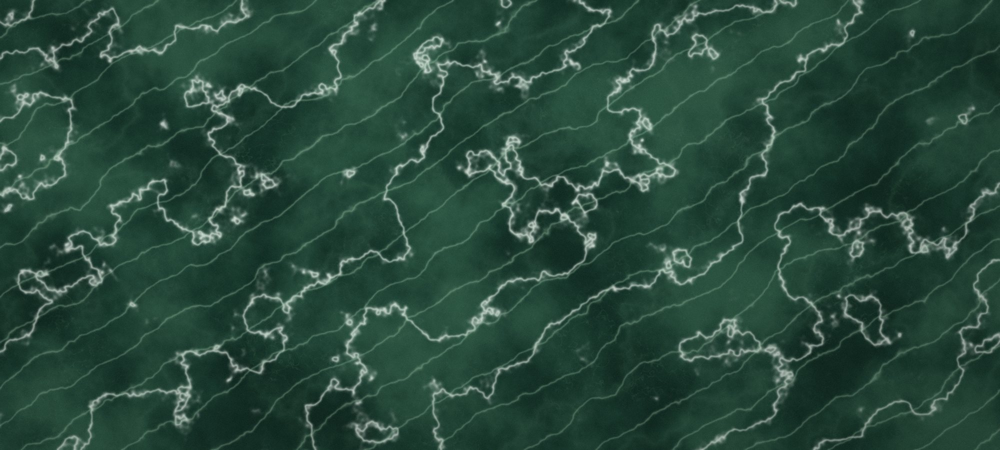

Kazananların tercihi
20 yılı aşkın deneyimle mermerin zamansız güzelliğini yaşam alanlarına taşıyoruz.

Taşın dilini
bilen bir ekip
Mermer, doğal taşın en zarif ve dayanıklı biçimidir. Biz de 20 yılı aşkın süredir bu taşı yaşam alanlarına taşıyoruz.
Lüks mermer konusunda uzmanlaşmış ekibimizle, dünyanın dört bir yanından en kaliteli mermer çeşitlerini özenle seçerek müşterilerimize sunuyoruz. Bir bloğun rengi, damar yönü ve iç yapısı; o taşın hangi projede hangi yüzeyde hak ettiği yeri bulacağını belirler. İşimizin özü bu değerlendirmedir.
Yurt içi ve yurt dışı müşterilerimize güvenilir, kaliteli ve estetik çözümler sunarak sektördeki liderliğimizi sürdürüyoruz. Geniş ürün yelpazemizle mekânlarınıza hem estetik hem de değer katıyoruz.
Üzerinde durduğumuz
dört sütun
Seçkin Kaynak
Dünyanın dört bir yanındaki ocaklardan yalnızca renk ve doku tutarlılığı onaylanan bloklar koleksiyonumuza girer.
Uzman Ekip
Lüks mermer konusunda uzmanlaşmış ekibimiz, projenin taş seçiminden sevkiyatına kadar her aşamasında yanınızdadır.
Kalite Güvencesi
Her plaka; ton, kalınlık, yüzey ve ebat açısından tek tek denetlenir. Onaylanmayan plaka sevk edilmez.
Küresel Sevkiyat
Yurt içi ve yurt dışı müşterilerimize ihracat evrakları ve konteyner yüklemesi dâhil uçtan uca lojistik desteği sunuyoruz.

Vurgu yüzeylerinde plakayı bizzat seçmenizi öneriyoruz.
Katalogdan değil,
plakadan seçin
Doğal taşta iki plaka asla birbirinin aynısı değildir. Bu yüzden özellikle vurgu duvarları, tezgâhlar ve kitap açılımı uygulamalarında seçimin fotoğraf üzerinden değil, plakanın kendisi üzerinden yapılmasını öneriyoruz.
Depomuzu ziyaret edebilir, numaralandırılmış plaka fotoğraflarını talep edebilir ya da ekibimizin sizin adınıza seçim yapmasını isteyebilirsiniz. Hangi yolu seçerseniz seçin, sevkiyattan önce onayınızı alırız.
Bir sonraki projenizde birlikte çalışalım
Numune talebi, plaka seçimi ve fiyat teklifi için ekibimize yazın; 24 saat içinde size dönüş yapalım.